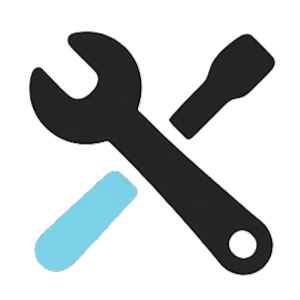

ארגז הכלים של NH Localאוסף כלים שימושיים וקלי משקל. נוצרו כדי לפתור בעיות קטנות במהירות.
סקילים
כלי דפדפן
סקריפטים
תוספי כרום
על הפרויקט
רוב הכלים נכתבו באמצעות Vibe Code, והם נועדו לשימוש כמות שהם. כל אחד מוזמן לשפר, להתאים אותם לצרכיו המדויקים, ולשתף בחזרה.
וויב קוד הוא העתיד של התכנות.